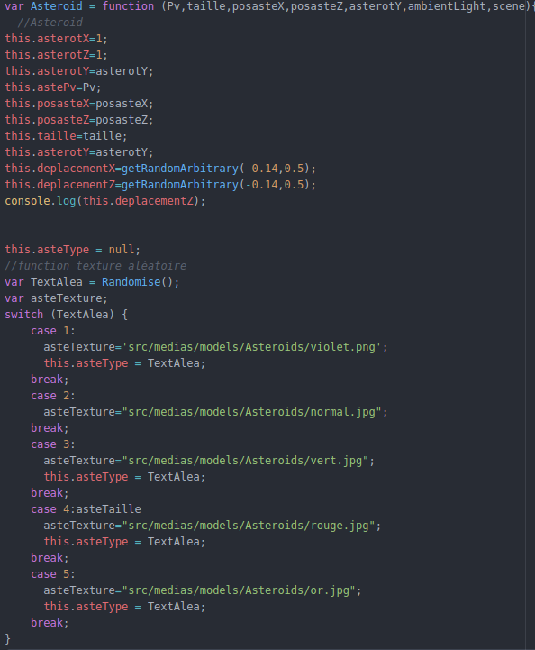
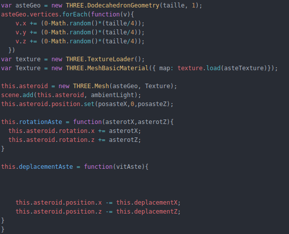
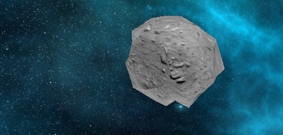
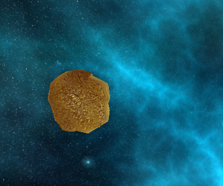

Pour créer des ennemis pour notre vaisseau, j'ai créer un Object astéroid qui a plusieurs parametres :
Visuellement cela nous donne :
A l'aide de THREE.DodecahedronGeometry() je modelise les ennemis et modifie leur vecteur avec .vertices
Maintenant que l'on connais nos ennemis il faut pouvoir anticipé (ou pas) leurs mouvements.
Je crée de la sorte deux fonctions l'une gérant la rotation de l'astéroid et l'autre sont déplacement
Voyons maintenant le rendu de la scene avec deux terribles ennemis
Un astéroid avec une texture normale, sans effet
Un astéroid avec une texture normale avec effet
Maintenant que les combattants sont réunis, ils leurs faut un endroit où se battrent